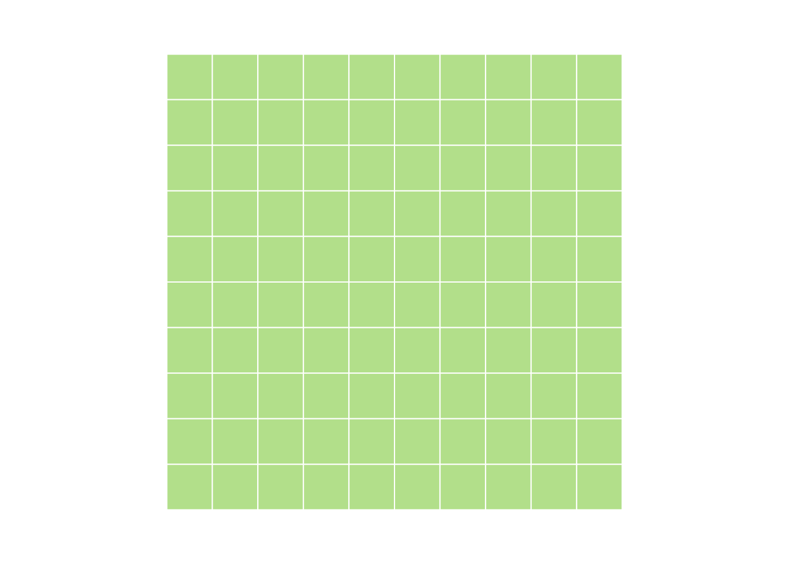
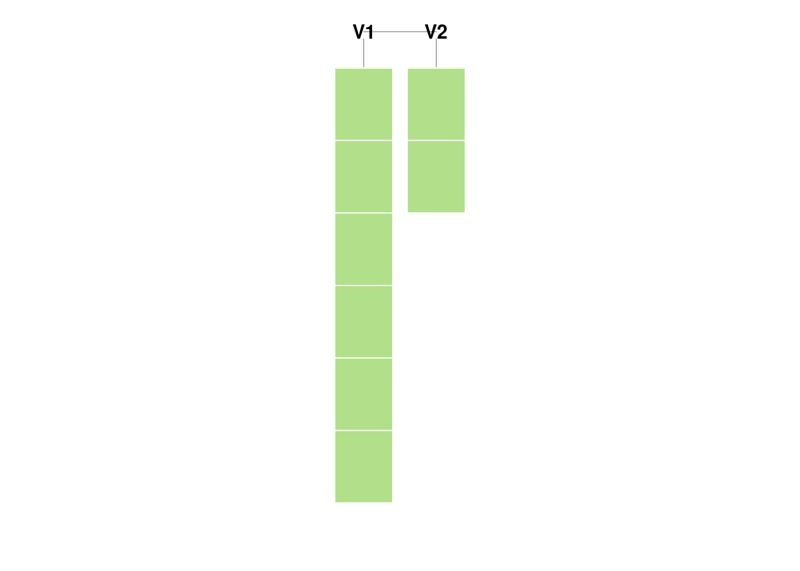

5 Vectors
In this chapter, we’re going to learn about vectors, which are one of the key building blocks of R programming. By the end of this chapter, you will know the following:
- What is a vector?
- How are vectors created?
- What is metadata?
- How can I summarize a vector?
5.1 What is a vector?
Enter a value at the console and hit enter. What do we see?
Console returning one value
By now, this should make sense. We entered 2 and we got back 2. But what’s that 1 in brackets? Things get weirder when we ask R to return more than one value. Type “letters” (without the quotes) and have a look.
Console returning more than one value
Now there’s not only a 1 in brackets, there’s also a 16 on the second line. (Note that your console may appear a bit different than mine.) You’re clever and have probably figured out that the numbers in brackets have something to do with the amount of output generated. In the second case, “p” is the 16th letter of the alphabet and the bracketed 16 helps us know where we are in the sequence when it spills onto multiple lines. So, the bracketed figures are there to indicate how many numbers have been returned.
OK, cool. So what?
So what? So everything! In R, every variable is a vector. When we entered the number 2 at the console, we were creating (briefly) a vector which had a length of 1. The next console entry - “letters” - is a vector with 26 elements. Vectors can have many different values, but they’re all associated with one thing. They allow us to reason about a lot of data at once. Let’s say that again, because it’s very important. Vectors allow us to reason about a lot of data at once. The translation of a large volume of data into fewer values, and/or simple decision rules is the essense of statistics. This is why R - which was designed by statisticians - place vectors front and center in how the language is constructed. Statisticians -and actuaries!- are accustomed to writing mathematical formulas. Our interactions with our calculation engines should exploit that.
OK, enough cheerleading. What is the practical benefit? Well, here’s something for openers:
x <- 1:100
b <- 1.5
y <- x * bTo generate 100 new values, I just applied a multiplication operation in a single line. This is similar to applying the same function to a set of contiguous cells in a spreadsheet. However, in this case, I don’t have to make 100 assignments to the variable y. I don’t even need to worry about how many times the command needs to be repeated. Vectors can grow and shrink automatically. No need to move cells around on a sheet. No need to copy formulas or change named ranges. R just did it. Moreover, there’s no chance that I’ll miss a cell due to operator error.
5.1.1 Vector properties
So, how will I know a vector when I see one? For starters, it will have the following basic properties:
- Every element in a vector must be the same basic data type. (Refer to Chapter 4: Data Types for a review of basic data types.)
- Vectors are ordered.
- Vectors have one dimension. Higher dimensions are possible via matrices and arrays.
- Vectors may have metadata like names for each element.
A quick word about dimensionality: there are folks who will make a big fuss about the difference between a vector and a matrix and an array. Further, they might insist that there’s a difference between a 100 x 1 matrix and a one dimensional vector. I’m not one of those people. To me, anything that forms a countable set of elements is an array. Splitting it into dimensions is just a matter of imposing some structure to the set. I can sort my bag of M&Ms by color, put them in rows, etc. But don’t listen to me. When working with R, you will almost invariably see a unidimensional set of data referred to as a “vector”. Anything with two dimensions is a “matrix” and it contains the specific notion of “rows” and “columns”. Anything of higher dimensions is an array.
You needn’t spend too much time sweating over that last paragraph. I’m just getting across the idea that dimensionality is a bit arbitrary and will always be mutable. At this point, the key thing to bear in mind is that all of the data is of the same type.
5.2 Vector construction
So how do I create a vector? No real trick here. You’ll be constructing vectors whether you want to or not. But let’s talk about a few core functions for vector construction and manipulation. These are ones that you’re likely to see and use often.
5.2.1 seq
The first functions we’ll look at are seq and its first cousin the : operator7. You’ve already seen : where we’ve used it generate a sequence of integers. seq is much more flexible: you can specify the starting point, the ending point, the length of the interval and the number of elements to output. You’ll need to provide at least three of the parameters and R will figure out everything else. We can think of the four use cases as being associated with which element we opt to leave out.
# Leave out the interval
someXs <- seq(from = 0, to = 1, length.out = 300)
# Leave out the ending point
pies = seq(from = 0, by = pi, length.out = 5)
# Leave out the length
someYs <- seq(from = 5, to = 15, by = 4)
# Leave out the start
someZ <- seq(to = 100, by = 3, length.out = 20)5.2.2 rep
Whereas the seq function will generate unique values, the rep function will replicate its input. Tell it what you want repeated and how many times. Let’s look at 100 pies:
i <- rep(pi, 100)Note that the rep function also has an argument called length.out. This will cause the times argument to be ignored. Note that because you’re replicating a vector, you might not get every value replicated the same number of times. That will only happen if length.out is a multiple of the input vector length. Have a go at the following line of code.
rep(1:4, length.out = 9)
#> [1] 1 2 3 4 1 2 3 4 1There’s nothing stopping us from combining functions ######
5.2.3 c
For just a single letter, c packs quite a punch. The c is short for “concatenate” and you’ll be happy about the reduced keystrokes. You’ll be using this function a LOT. c will join two or more vectors into one vector. Remember the first basic property of vectors: every element must be the same type. If you try to concatenate vectors which have different data types, R will convert them to a common data type. For more on this, see the chapter on data types.
i <- c(1, 2, 3, 4, 5)
j <- c(6, 7, 8, 9, 10)
k <- c(i, j)Watch what happens when we try to concatenate two vectors which have different data types:
i <- 1:5
i
#> [1] 1 2 3 4 5
j <- letters
j
#> [1] "a" "b" "c" "d" "e" "f" "g" "h" "i" "j" "k" "l" "m" "n" "o" "p" "q"
#> [18] "r" "s" "t" "u" "v" "w" "x" "y" "z"
k <- c(i, j)
k
#> [1] "1" "2" "3" "4" "5" "a" "b" "c" "d" "e" "f" "g" "h" "i" "j" "k" "l"
#> [18] "m" "n" "o" "p" "q" "r" "s" "t" "u" "v" "w" "x" "y" "z"5.2.4 paste
Another gotcha: in many other languages, “concatenation” is an operation which joins multiple strings to generate a single string. However, in R, the c function will concatenate multiple vectors (or other objects) into one object. So, how do you concatenate a string? With the paste function and its close relative paste0.
firstName <- "Brian"
lastName <- "Fannin"
fullName <- paste(lastName, firstName, sep = ", ")paste0 is a shortcut for the common use case where we want to join characters together without anything separating them:
5.2.5 sample
The sample function will generate a random sample. This is a great one to use for randomizing a vector.
months <- c("January", "February", "March", "April"
, "May", "June", "July", "August"
, "September", "October", "November", "December")
set.seed(1234)
mixedMonths <- sample(months)
head(mixedMonths)
#> [1] "February" "July" "November" "June" "October" "May"By altering the size parameter and possibly setting the replace parameter to TRUE, we can get lots of values.
set.seed(1234)
lotsOfMonths <- sample(months, size = 100, replace = TRUE)sample may also be used within the indexing of the vector itself:
set.seed(1234)
moreMonths <- months[sample(1:12, replace=TRUE, size=100)]
head(moreMonths)
#> [1] "February" "August" "August" "August" "November" "August"
# Cleaner with sample.int
set.seed(1234)
evenMoreMonths <- months[sample.int(length(months), size=100, replace=TRUE)]
head(evenMoreMonths)
#> [1] "February" "August" "August" "August" "November" "August"5.2.6 sort
Remember how I said that the elements of a vector have an order? Well, they do. Although this may seem obvious, this is not a property that’s observed in other data constructs like a relational database. In a system like Oracle or SQL Server, records aren’t stored in order. Further, there’s no guarantee that when you run a SELECT statement that you’ll get rows in the back in the same order when you run the same statement a second time8. That’s done to optimize insertion and deletion in fixed storage. For R, all of your data is in RAM, so this is not as important. So, we can sort our vector and know that this arrangement of elements won’t change until we say so.
set.seed(1234)
i <- sample(1:5)
i
#> [1] 1 3 2 4 5
sort(i)
#> [1] 1 2 3 4 55.2.7 vector
The vector function will create a vector. Sounds pretty fundamental. So why didn’t I show this as the first method to generate a new vector? Because you probably won’t use it very often. The vector function will create a new, empty vector with whatever data type and length you’d like. Until you fill it with data, this has fairly limited utility. The strongest use case for vector is to preallocate storage in memory. This is a performance issue related to the way that R handles the modification of data objects. The subject is beyond the scope of this text, so I’ll refer you to (Wickham, n.d.).
x <- vector(mode = "numeric", length = 10)5.2.8 Recycling
R will “recycle” vectors until there are enough elements to perform an operation. Everything gets as “long” as the longest vector in the operation. For scalar operations on a vector this doesn’t involve any drama. Try the following code:
vector1 = 1:10
vector2 = 1:5
scalar = 3
print(vector1 + scalar)
#> [1] 4 5 6 7 8 9 10 11 12 13
print(vector2 + scalar)
#> [1] 4 5 6 7 8
print(vector1 + vector2)
#> [1] 2 4 6 8 10 7 9 11 13 155.3 Vector access
Vector access is something that we’ll be doing all the time. Here, we’re subsetting the elements in our vector to get something useful. This is critical when we want to isolate bits of our data, either for analysis or to emphasize particularly important points.
Vectors may be accessed in one of two ways: by position9, or via logical subsetting. In the first case, we’re asking R to return the elements at particular positions. In the second, we form a vector of logical values of the same length of the vector we’re accessing.
5.3.1 head/tail
The head and tail functions will return the first or last few elements of a vector. They’re
set.seed(1234)
e <- rnorm(100)
e[1]
#> [1] -1.207066
e[1:4]
#> [1] -1.2070657 0.2774292 1.0844412 -2.3456977
e[c(1,3)]
#> [1] -1.207066 1.0844415.3.2 Vector access - logical access
Vectors may be accessed logically. This may be done by passing in a logical vector, or a logical expression.
i = 5:9
i[c(TRUE, FALSE, FALSE, FALSE, TRUE)]
#> [1] 5 9
i[i > 7]
#> [1] 8 9
b = i > 7
b
#> [1] FALSE FALSE FALSE TRUE TRUE
i[b]
#> [1] 8 95.3.3 which
The which function returns indices that match a logical expression.
i <- 11:20
which(i > 15)
#> [1] 6 7 8 9 10
i[which(i > 15)]
#> [1] 16 17 18 19 20As with other functions that return indices, remember that you can store the indices in another variable, or use the indices to extract elements from a different vector.
5.3.4 order
I’ve put order here as it feels like a close companion to which and the idea of ordinal vector access. The order function will return the indices of the vector in order. This is a key difference from sort which alter the contents of the vector itself.
set.seed(1234)
x <- sample(1:5)
order(x)
#> [1] 1 3 2 4 5
y <- 3 * x
y[order(x)]
#> [1] 3 6 9 12 15Note that changing the decreasing parameter from FALSE to TRUE will change the sort order.
5.4 Set theory
Vectors adhere to all the set theory operations that you would expect.
x <- 1:5
y <- 1:10
union(x, y)
#> [1] 1 2 3 4 5 6 7 8 9 10
intersect(x, y)
#> [1] 1 2 3 4 5
setdiff(x, y)
#> integer(0)
setdiff(y, x)
#> [1] 6 7 8 9 10
is.element(4, x)
#> [1] TRUE
is.element(11, x)
#> [1] FALSE
is.element(x, y)
#> [1] TRUE TRUE TRUE TRUE TRUE
setequal(1:5, sample(1:5))
#> [1] TRUE
identical(1:5, sample(1:5))
#> [1] FALSEThe %in% operator will return a logical vector indicating whether or not an element of the first set is contained in the second set.
x <- 1:10
y <- 5:20
x %in% y
#> [1] FALSE FALSE FALSE FALSE TRUE TRUE TRUE TRUE TRUE TRUE
is.element(x, y)
#> [1] FALSE FALSE FALSE FALSE TRUE TRUE TRUE TRUE TRUE TRUE5.5 Assignment
Assignment works the same as access, but in the opposite direction. Here, we’re not extracting a subset of a vector, we’re
5.5.1 Growth by assignment
A Assigning a value beyond a vector’s limits will automatically grow the vector. Interim values are assigned NA.
i <- 1:10
i[30] = pi
i
#> [1] 1.000000 2.000000 3.000000 4.000000 5.000000 6.000000 7.000000
#> [8] 8.000000 9.000000 10.000000 NA NA NA NA
#> [15] NA NA NA NA NA NA NA
#> [22] NA NA NA NA NA NA NA
#> [29] NA 3.1415935.6 Metadata
Metadata is data about data. Simple vectors don’t have much need for metadata, but there is at least one property - name - that you’ll see often.
i <- 1:4
names(i) <- letters[1:4]
i
#> a b c d
#> 1 2 3 4In R, most metadata is set and accessed by the attr function and metadata are called “attributes”. Some pre-defined attributes like names have their own assignment and reference function. Those are: class, comment, dim, dimnames, row.names and tsp. We’ll hear more about dim, dimnames and row.names, as well as a few other pre-defined properties, when we talk about matrices later.
In general, an attribute is set using the <- assignment operator along with the function name. The attribute is referenced by simply typing the function.
comment(i) <- "This is a comment."
comment(i)
#> [1] "This is a comment."
j <- 5:8
comment(j)
#> NULLattributes(i)
#> $names
#> [1] "a" "b" "c" "d"
#>
#> $comment
#> [1] "This is a comment."5.6.1 length, dim
length will return the number of elements in a vector.
5.7 Summarization
There are loads of functions which take vector input and return scalar output. Translation of a large set of numbers into a few, informative values is one of the cornerstones of statistics.
x = 1:50
sum(x)
mean(x)
max(x)
length(x)
var(x)5.8 Matrices
A matrix is a vector with higher dimensions. In R, when we talk about a matrix, we will always mean something with two dimensions. A matrix may be constructed in two ways:
- Use the
matrixfunction. - Change the dimensions of a
vector.
Note
myVector <-
myMatrix <- matrix(1:100, nrow=10, ncol=10)
myOtherMatrix <- myVector
dim(myOtherMatrix) <- c(10,10)
identical(myMatrix, myOtherMatrix)
#> [1] TRUEmyMatrix <- matrix(nrow=10, ncol=10)
5.8.1
dim(myMatrix) <- c(25, 4)
5.8.2 Matrix metadata
Possible to add metadata. This is typically a name for the columns or rows.
myMatrix <- matrix(nrow=10, ncol=10, data = sample(1:100))
colnames(myMatrix) <- letters[1:10]
head(myMatrix, 3)
#> a b c d e f g h i j
#> [1,] 84 73 61 36 95 70 78 98 11 66
#> [2,] 29 47 16 89 30 79 88 37 72 64
#> [3,] 27 81 21 33 44 25 69 9 43 28
rownames(myMatrix) <- tail(letters, 10)
head(myMatrix, 3)
#> a b c d e f g h i j
#> q 84 73 61 36 95 70 78 98 11 66
#> r 29 47 16 89 30 79 88 37 72 64
#> s 27 81 21 33 44 25 69 9 43 285.8.3 Matrix access
Matrix access is similar to vector, but with additional dimensions. For two-dimensional matrices, the order is row first, then column.
myMatrix[2, ]
#> a b c d e f g h i j
#> 29 47 16 89 30 79 88 37 72 64
myMatrix[, 2]
#> q r s t u v w x y z
#> 73 47 81 90 92 39 96 26 42 93Single index will return values by indexing along only one dimension.
myMatrix[2]
#> [1] 29
myMatrix[22]
#> [1] 165.8.4 Matrix summarizatioon
sum(myMatrix)
#> [1] 5050
colSums(myMatrix)
#> a b c d e f g h i j
#> 351 679 536 410 463 563 520 473 548 507
rowSums(myMatrix)
#> q r s t u v w x y z
#> 672 551 380 538 690 489 494 548 356 332
colMeans(myMatrix)
#> a b c d e f g h i j
#> 35.1 67.9 53.6 41.0 46.3 56.3 52.0 47.3 54.8 50.75.9 Arrays
An array has more than two dimensions. Do you like data with more than two dimensions? Shine on you crazy diamond. In a geometric space, I can hang with three dimensions, but in other contexts and in higher dimensions, I lose cognition pretty quick. In those cases, I often find my data is easier to express as a data frame, which we’ll get to. In the meantime, here’s ordinal access for any mathechists who love using 3 or more sets of natural numbers to reference data elements.
myArray <- 1:100
dim(myArray) <- c(10, 2, 5)
myArray[1, 2, 3]
#> [1] 51Sorting out why that’s 51 hurts my brain.
5.10 Exercises
Create a vector of length 10, with years starting from 1980.
Create a vector with values from 1972 to 2012 in increments of four (1972, 1976, 1980, etc.)
For the next few questions, use the following vectors:
FirstName <- c("Richard", "James", "Ronald", "Ronald"
, "George", "William", "William", "George"
, "George", "Barack", "Barack")
LastName <- c("Nixon", "Carter", "Reagan", "Reagan"
, "Bush", "Clinton", "Clinton", "Bush"
, "Bush", "Obama", "Obama")
ElectionYear <- seq(1972, 2012, 4)- List the last names in alphabetical order
- List the years in order by first name.
- Create a vector of years when someone named “George” was elected.
- How many Georges were elected before 1996?
- Generate a random sample of 100 presidents.
5.11 Answers
LastName[order(LastName)]
#> [1] "Bush" "Bush" "Bush" "Carter" "Clinton" "Clinton" "Nixon"
#> [8] "Obama" "Obama" "Reagan" "Reagan"
ElectionYear[order(FirstName)]
#> [1] 2008 2012 1988 2000 2004 1976 1972 1980 1984 1992 1996
ElectionYear[FirstName == 'George']
#> [1] 1988 2000 2004
myLogical <- (FirstName == 'George') & (ElectionYear < 1996)
length(which(myLogical))
#> [1] 1
sum(myLogical)
#> [1] 1
sample(LastName, 100, replace = TRUE)
#> [1] "Obama" "Obama" "Reagan" "Carter" "Bush" "Bush" "Obama"
#> [8] "Obama" "Obama" "Clinton" "Reagan" "Reagan" "Clinton" "Clinton"
#> [15] "Reagan" "Obama" "Clinton" "Carter" "Bush" "Obama" "Clinton"
#> [22] "Obama" "Clinton" "Clinton" "Obama" "Clinton" "Obama" "Reagan"
#> [29] "Clinton" "Reagan" "Clinton" "Bush" "Clinton" "Obama" "Clinton"
#> [36] "Bush" "Reagan" "Nixon" "Obama" "Reagan" "Obama" "Clinton"
#> [43] "Obama" "Bush" "Clinton" "Bush" "Clinton" "Bush" "Reagan"
#> [50] "Nixon" "Bush" "Bush" "Nixon" "Bush" "Reagan" "Bush"
#> [57] "Clinton" "Bush" "Bush" "Reagan" "Bush" "Bush" "Clinton"
#> [64] "Carter" "Reagan" "Clinton" "Reagan" "Clinton" "Nixon" "Obama"
#> [71] "Nixon" "Obama" "Clinton" "Reagan" "Bush" "Bush" "Obama"
#> [78] "Carter" "Obama" "Bush" "Obama" "Obama" "Bush" "Obama"
#> [85] "Bush" "Bush" "Clinton" "Reagan" "Bush" "Clinton" "Bush"
#> [92] "Reagan" "Bush" "Reagan" "Obama" "Clinton" "Reagan" "Reagan"
#> [99] "Bush" "Clinton"5.12 Conclusion
Vectors are like atoms. If you understand vectors- how to create them, how to manipulate them, how to access the elements, you’re well on your way to grasping how to handle other objects in R. Vectors may combine to form molecules, but fundamentally, everything in R is a vector.
Having sorted out vectors, we’re next going to turn out attention to lists. Lists are similar to vectors in that they enable us to bundle large amounts of data in a single construct. However, they’re far more flexible and require a bit more thought.
Gotcha:
:has a different meaning when constructing a formula. In that context, it refers to the interaction of variables.↩This might not be true if the table is indexed. However, in general, a table’s index is stored on different physical space from the associated table. The table itself remains unordered.↩
I told you vectors were ordered.↩